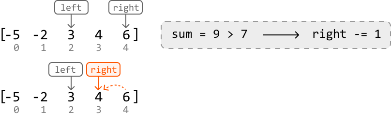

Pair Sum - Sorted
MediumGiven an array of integers sorted in ascending order and a target value, return the indexes of any pair of numbers in the array that sum to the target. The order of the indexes in the result doesn't matter. If no pair is found, return an empty array.
Example 1:
Input: nums = [-5, -2, 3, 4, 6], target = 7
Output: [2, 3]
Explanation: nums[2] + nums[3] = 3 + 4 = 7
Example 2:
Input: nums = [1, 1, 1], target = 2
Output: [0, 1]
Explanation: other valid outputs could be [1, 0], [0, 2], [2, 0], [1, 2] or [2, 1].
Intuition
The brute force solution to this problem involves checking all possible pairs. This is done using two nested loops: an outer loop that traverses the array for the first element of the pair, and an inner loop that traverses the rest of the array to find the second element. Below is the code snippet for this approach:
from typing import List
def pair_sum_sorted_brute_force(nums: List[int], target: int) -> List[int]:
n = len(nums)
for i in range(n):
for j in range(i + 1, n):
if nums[i] + nums[j] == target:
return [i, j]
return []
export function pair_sum_sorted_brute_force(nums, target) {
for (let i = 0; i < nums.length; i++) {
for (let j = i + 1; j < nums.length; j++) {
if (nums[i] + nums[j] === target) {
return [i, j]
}
}
}
return []
}
import java.util.ArrayList;
public class Main {
public ArrayList pair_sum_sorted_brute_force(ArrayList nums, int target) {
int n = nums.size();
for (int i = 0; i < n; i++) {
for (int j = i + 1; j < n; j++) {
if (nums.get(i) + nums.get(j) == target) {
ArrayList result = new ArrayList<>();
result.add(i);
result.add(j);
return result;
}
}
}
return new ArrayList<>();
}
}
This approach has a time complexity of O(n2), where n denotes the length of the array. This approach does not take into account that the input array is sorted. Could we use this fact to come up with a more efficient solution?
A two-pointer approach is worth considering here because a sorted array allows us to move the pointers in a logical way. Let's see how this works in the example below:
![Image represents a sample input for a coding problem likely related to finding pairs of numbers within an array that sum to a target value. The image shows an integer array `[-5, -2, 3, 4, 6]` enclosed in square brackets, with the index of each element subtly displayed below it (0 through 4). A comma separates the array from the statement 'target = 7,' which specifies the target sum to be found. The arrangement implies that the algorithm should search within the provided array for two numbers that add up to 7. The indices are not explicitly part of the input data but are visually provided to aid understanding of the array's structure.](images/01_01_pair-sum-sorted-img-28533b16.svg)
A good place to start is by looking at the smallest and largest values: the first and last elements, respectively. The sum of these two values is 1.
![Image represents a diagram illustrating a simple summation operation on an array. Two orange rectangular boxes labeled 'left' and 'right' point downwards with arrows towards a numerical array [-5, -2, 3, 4, 6]. The 'left' arrow points to the first two elements of the array, [-5, -2], while the 'right' arrow points to the last three elements, [3, 4, 6]. The array elements are indexed below with numbers 0 through 4, indicating their positions. A separate, light-grey, dashed-line rectangular box displays the result of the summation, showing 'sum = 1'. This implies that the sum of all elements in the array (-5 + -2 + 3 + 4 + 6) equals 1.](images/01_01_pair-sum-sorted-img-0c586927.svg)
Since 1 is less than the target, we need to move one of our pointers to find a new pair with a larger sum.
-
Left pointer: The left pointer will always point to a value less than or equal to the value at the right pointer because the array is sorted. Incrementing it would result in a sum greater than or equal to the current sum of 1.
-
Right pointer: Decrementing the right pointer would result in a sum that’s less than or equal to 1.
Therefore, we should increment the left pointer to find a larger sum:
![Image represents a visual depiction of a two-pointer algorithm, likely used to find a pair of numbers in a sorted array that sum to a target value (not explicitly shown but implied). The top section shows an initial state with two pointers, labeled 'left' and 'right,' pointing to the beginning and end, respectively, of a sorted array [-5, -2, 3, 4, 6]. The indices (0, 1, 2, 3, 4) are shown below the array elements. A dashed box shows the current sum (1, calculated as -5 + 6) being compared to a target value (7, also implied). Since the sum (1) is less than 7, a solid arrow indicates that the 'left' pointer is incremented (left += 1). The bottom section illustrates the updated state after the pointer increment, where the 'left' pointer now points to -2. The 'right' pointer remains unchanged. The dotted arrow emphasizes the movement of the 'left' pointer. The overall diagram demonstrates a single iteration of the algorithm, highlighting the pointer movement based on the comparison of the current sum with the target value.](images/01_01_pair-sum-sorted-img-1b9b2b2e.svg)
Again, the sum of the values at those two pointers (4) is too small. So, let's increment the left pointer:
![Image represents a visual depiction of a coding pattern, likely illustrating a two-pointer approach or a similar algorithm operating on an array. The top section shows an array `[-5, -2, 3, 4, 6]` with pointers labeled 'left' and 'right' initially pointing to the first and last elements respectively. The indices of the array elements are shown below the array. A dashed box displays a condition: `sum = 4 < 7`, indicating that the sum of elements pointed to by 'left' (3) and 'right' (6) is 4, which is less than 7. A thick arrow connects this condition to another dashed box showing the consequence: `left += 1`, signifying that the 'left' pointer is incremented. The bottom section shows the state after this operation: the 'left' pointer has moved one position to the right, now pointing to the element 3, while the 'right' pointer remains unchanged. The 'left' pointer in the bottom section is highlighted in orange to emphasize its movement. The overall diagram illustrates a step-by-step execution of a code segment that iterates through an array, potentially searching for a specific condition or performing a calculation based on the values pointed to by the 'left' and 'right' pointers.](images/01_01_pair-sum-sorted-img-4d809c46.svg)
Now, the sum (9) is too large. So, we should decrement the right pointer to find a pair of values with a smaller sum:

7', implying the sum of the elements pointed to by 'left' and 'right' (3 + 6 = 9) is greater than 7. An arrow then points to another box indicating 'right -= 1', suggesting the 'right' pointer's index is decremented. The bottom section shows the updated state after this operation. The array remains the same, but the 'right' pointer (now orange) points to the element '4' (index 3), illustrating the effect of the decrement operation. A dotted line shows the movement of the 'right' pointer from index 4 to index 3. The 'left' pointer remains unchanged."/>Finally, we found two numbers that yield a sum equal to the target. Let’s return their indexes:
![Image represents a diagram illustrating a coding pattern, possibly related to array processing or a divide-and-conquer algorithm. At the top, two orange rectangular boxes labeled 'left' and 'right' are shown. Arrows descend from these boxes, pointing to the elements '3' and '4' respectively, within a horizontal array represented as `[-5, -2, 3, 4, 6]`. The array indices (0, 1, 2, 3, 4) are displayed beneath the corresponding array elements. A light gray, dashed-bordered rectangle contains the expression 'sum = 7 == 7', indicating a comparison where the sum of some values (implied to be '3' and '4') equals 7. A thick arrow points from this comparison to the text 'return [left, right]', suggesting that if the comparison is true, the function returns an array containing the values 'left' and 'right'. The overall diagram visually depicts the process of selecting elements from an array based on some condition (here, implicitly the sum of selected elements), and returning a result based on those selections.](images/01_01_pair-sum-sorted-img-fa4ce706.svg)
Above, we’ve demonstrated a two-pointer algorithm using inward traversal. Let’s summarize this logic. For any pair of values at left and right:
-
If their sum is less than the target, increment
left, aiming to increase the sum towards the target value. -
If their sum is greater than the target, decrement
right, aiming to decrease the sum towards the target value. -
If their sum is equal to the target value, return
[left, right].
We can stop moving the left and right pointers when they meet, as this indicates no pair summing to the target was found.
[Interactive code editor — visit bytebytego.com to run]
Implementation
from typing import List
def pair_sum_sorted(nums: List[int], target: int) -> List[int]:
left, right = 0, len(nums) - 1
while left < right:
sum = nums[left] + nums[right]
# If the sum is smaller, increment the left pointer, aiming to increase the
# sum towards the target value.
if sum < target:
left += 1
# If the sum is larger, decrement the right pointer, aiming to decrease the
# sum towards the target value.
elif sum > target:
right -= 1
# If the target pair is found, return its indexes.
else:
return [left, right]
return []
export function pair_sum_sorted(nums, target) {
let left = 0
let right = nums.length - 1
while (left < right) {
const sum = nums[left] + nums[right]
// If the sum is smaller, increment the left pointer, aiming to increase the
// sum towards the target value.
if (sum < target) {
left += 1
}
// If the sum is larger, decrement the right pointer, aiming to decrease the
// sum towards the target value.
else if (sum > target) {
right -= 1
}
// If the target pair is found, return its indexes.
else {
return [left, right]
}
}
return []
}
import java.util.ArrayList;
public class Main {
public ArrayList pair_sum_sorted(ArrayList nums, int target) {
int left = 0, right = nums.size() - 1;
while (left < right) {
int sum = nums.get(left) + nums.get(right);
// If the sum is smaller, increment the left pointer, aiming to increase the
// sum towards the target value.
if (sum < target) {
left++;
}
// If the sum is larger, decrement the right pointer, aiming to decrease the
// sum towards the target value.
else if (sum > target) {
right--;
}
// If the target pair is found, return its indexes.
else {
ArrayList result = new ArrayList<>();
result.add(left);
result.add(right);
return result;
}
}
return new ArrayList<>();
}
}
Complexity Analysis
Time complexity: The time complexity of pair_sum_sorted is O(n) because we perform approximately n iterations using the two-pointer technique in the worst case.
Space complexity: We only allocated a constant number of variables, so the space complexity is O(1).
Test Cases
In addition to the examples already discussed, here are some other test cases you can use. These extra test cases cover different contexts to ensure the code works well across a range of inputs. Testing is important because it helps identify mistakes in your code, ensures the solution works for uncommon inputs, and brings attention to cases you might have overlooked.
| Input | Expected output | Description |
|---|---|---|
nums = [] target = 0 | [] | Tests an empty array. |
nums = [1] target = 1 | [] | Tests an array with just one element. |
nums = [2, 3] target = 5 | [0, 1] | Tests a two-element array that contains a pair that sums to the target. |
nums = [2, 4] target = 5 | [] | Tests a two-element array that doesn’t contain a pair that sums to the target. |
nums = [2, 2, 3] target = 5 | [0, 2] or [1, 2] | Testing an array with duplicate values. |
nums = [-1, 2, 3] target = 2 | [0, 2] | Tests if the algorithm works with a negative number in the target pair. |
nums = [-3, -2, -1] target = -5 | [0, 1] | Tests if the algorithm works with both numbers of the target pair being negative. |
Interview Tip
Tip: Consider all information provided.
When interviewers pose a problem, they sometimes provide only the minimum amount of information required for you to start solving it. Consequently, it’s crucial to thoroughly evaluate all that information to determine which details are essential for solving the problem efficiently. In this problem, the key to arriving at the optimal solution is recognizing that the input is sorted.